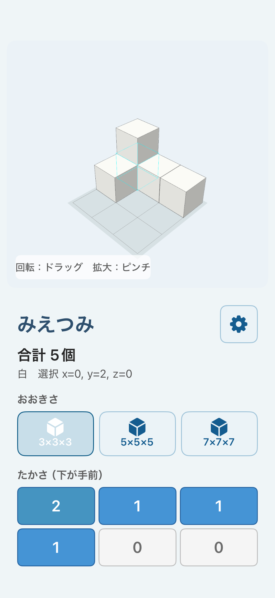
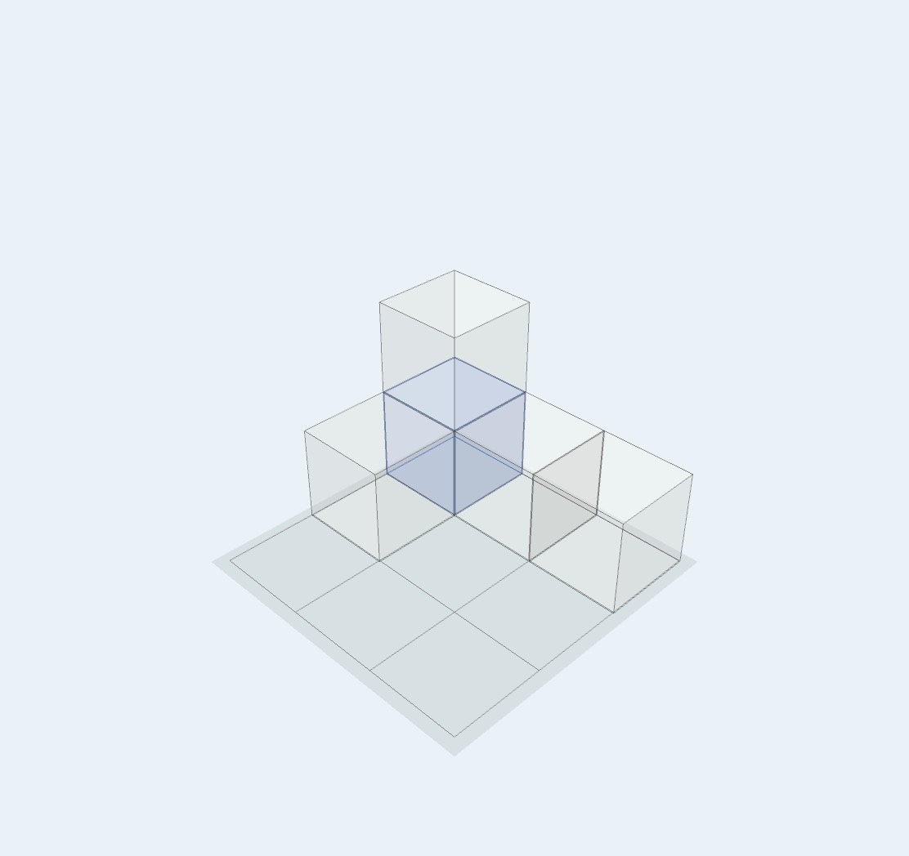

形を作る
「たかさ（下が手前）」のマスをタップし、その場所に積む個数を指定します。マスの数字は0から現在の大きさの上限まで順に変わります。
3×3×3は無料版で利用できます。フル版では5×5×5と7×7×7へ広げられます。「かずを表示」をONにすると、積み木の合計個数も確認できます。

立体を動かして見る
3D表示をドラッグすると自由に回転でき、ピンチすると拡大・縮小できます。
「してん」では、「ななめ」「しょうめん」「ひだり」「みぎ」「うしろ」「まうえ」へ切り替えられます。自由に動かして全体をつかみ、問題で方向が決まっているときはプリセットで確かめます。
「してんを戻す」を押すと、最初の斜めの位置へ戻ります。
隠れた部分を確かめる
「ひょうじ」では、「つうじょう」「すける」「せん」を選べます。「すける」は面を半透明にし、「せん」は輪郭を中心に表示します。
手前の積み木で奥が見えないときは、立体を回すだけでなく、表示方法も切り替えて位置関係を確かめます。


色を目印や作品づくりに使う
「いろ」で色を選び、3D表示の積み木をタップすると、その積み木を塗れます。
隠れた積み木や注目したい積み木に色を付けると、位置を説明しやすくなります。色付き積み木を別の方向から見る問題や、自由な作品づくりにも利用できます。
無料版では白、赤、青、黄、緑を利用できます。フル版では黒、灰、紫、水色、桃、橙が加わります。「いろを戻す」を押すと、配置を変えずにすべて白へ戻せます。
数、アンテナ、光を表示する
「かずを表示」は、現在置かれている積み木の合計個数を表示します。
「アンテナ」は、縦の各列に積まれた個数と同じ本数の線を表示します。詳しい数え方は積み木問題での使い方をご覧ください。
フル版の「ひかり」では、視点を固定したままドラッグで光源を動かし、ピンチで距離を変えられます。「ひかりを戻す」で最初の位置へ戻ります。
作品を保存する・作り直す
フル版の「しゃしん」を押すと、操作ボタンを除いた3D作品の画像を写真ライブラリへ保存できます。初回に写真への追加許可が表示された場合は、保存を続けるために許可してください。
「ぜんぶ消す」は、配置した積み木と色をすべて削除します。積み木がある場合は確認画面が表示されます。
写真は利用者が「しゃしん」を押したときだけ保存され、開発者や外部サーバーへ送信されません。